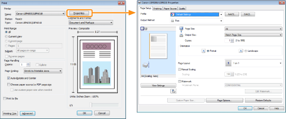
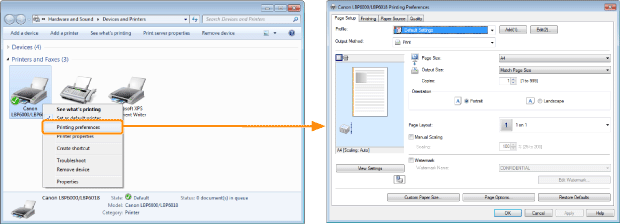
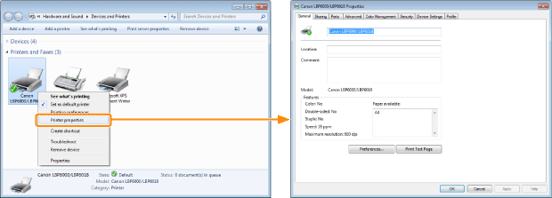

You can specify the various printing preferences in the setting screen of the printer driver.
There are the following methods to display the setting screen.
Displaying from an application
The specified settings apply only to data to be printed from the same application. Exiting the application resets the changed settings to the default settings.
|
How to display
(The procedure may differ depending on the application you are using.)
|

Displaying from the printer folder ( "Basic Operations/Various Information for Windows")
"Basic Operations/Various Information for Windows")
"Basic Operations/Various Information for Windows")<Printing preferences screen>
You can change the default values for printing preferences which apply to all data.
|
How to display
Right-click the icon for this printer, then select [Printing Preferences] from the pop-up menu.
|

<Printer properties screen>
You can specify the settings for "Profiles" to be added to the server and so on.
|
How to display
Right-click the icon for this printer, and then select [Printer properties] or [Properties] from the pop-up menu.
|

|
NOTE
|
|
For details on the settings
See Help.
About the sheets displayed by Windows
The following sheets are displayed by Windows. For more details, see Windows Help.
[General] sheet
[Sharing] sheet
[Ports] sheet
[Advanced] sheet
[Color Management] sheet
[Security] sheet
About the printer driver
The functions of the printer driver may be changed due to upgrade.
|